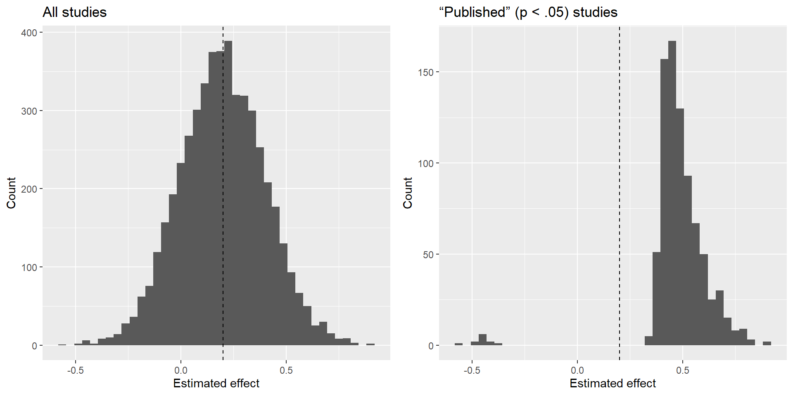

Lecture 13 - QRPs & Open Science Practices
2025-08-21
Motivation & Scope
- Credible science relies on transparent and reproducible evidence, not on surprising results or compelling narratives.
- Large-scale replications show many published effects shrink or fail when retested with high-powered designs and original materials (36% significant vs. 97% in originals; replication effects ≈ half) (Open Science Collaboration, 2015).
- This week examines how research practices and incentive structures inflate false positives and distort effect estimates.
- We also introduce open-science practices that improve credibility (e.g., preregistration, sharing of data/code/materials, Registered Reports)
Learning goals
By the end of the week, you will be able to:
- Explain how questionable research practices (QRPs) and selection based on statistical significance create too many significant findings and exaggerated effects.
- Distinguish confirmatory from exploratory analyses and describe how preregistration and Registered Reports align incentives with accuracy.
- Articulate why research design (e.g., clear plans, adequate power, outcome specification) is crucial for credible evidence.
Why concerns—and why they matter
- Psychology reports an unusually high share of significant results (≈96%) despite typical studies being underpowered (Bakker et al., 2012).
- Small samples, many hypotheses, and analytic flexibility lower the positive predictive value; undisclosed multiple testing raises the effective Type I error rate (Ioannidis, 2005; Bakker et al., 2012).
- Mechanism: imprecise estimates + selection on \(p<.05\) → overrepresentation of upwardly biased effects (the winner’s curse).
- Evidence: High-powered, preplanned replications recover smaller effects and fewer rejections of the null hyspothesis (≈36% vs. 97%; replication effects ≈ half) (Open Science Collaboration, 2015).
- Implication: The visible literature overstates effect sizes and discovery rates, motivating open-science reforms.
What are QRPs?
Questionable research practices (QRPs) are research and reporting choices that may be defensible in isolation but, when guided by the pursuit of \(p<.05\), inflate false positives and overestimate effects.
They blur the boundary between confirmatory and exploratory claims.
They distort the cumulative record: the published literature contains too many positives and larger-than-true effects, while nulls are underrepresented—biasing meta-analyses, power planning, and theory appraisal (Bakker et al., 2012; Nosek et al., 2012; Open Science Collaboration, 2015).
In the upcoming slides we introduce a few examples of these practices.
QRP 1 — Optional stopping / sequential testing
What it is: Peeking at interim results and adding participants until \(p<.05\).
Mechanism → consequence: Each peek is an additional test; without proper correction, the Type I error rate escalates, and significant estimates are exaggerated.
Good practice: Fix a stopping rule in advance or use formal sequential designs, and report any deviations from the initial plan (Bakker et al., 2012; Nosek et al., 2012).
QRP 2 — Selective outcome reporting
What it is: Many outcomes are measured; only those with \(p<.05\) are reported.
Why it creates false positives: This is multiple testing without disclosure: with \(m\) tests at \(\alpha=.05\), the probability of false positive is \(1-(1-.05)^m\) (≈40% for \(m=10\)). Reporting only the “wins” both inflates the false-positive rate and overstates effect sizes among published findings.
Good practice: Pre-specify primary outcomes, label secondary/exploratory analyses, use appropriate corrections for multiple testing, and report or share all outcomes (Bakker et al., 2012; Nosek et al., 2012).
QRP 3 — Flexible data cleaning
What it is: Post hoc exclusions, ad hoc outlier rules, or transformations chosen after inspecting results.
Mechanism → consequence: Data-dependent rules capitalize on chance, raising the false-positive rate and biasing estimates; they also blur the boundary between confirmatory and exploratory analyses.
Good practice: Predefine inclusion/exclusion, outlier, and transformation rules and apply them uniformly; use blinded preprocessing when feasible; and report robustness checks (e.g., alternative reasonable rules) alongside counts and reasons for exclusions, with code and both raw and cleaned data shared (Bakker et al., 2012; Nosek et al., 2012).
QRP 4 — Model fishing (researcher degrees of freedom in modeling)
What it is: After inspecting the data, trying many plausible specifications (covariates, transformations, interactions) and reporting only the most favorable result.
Mechanism → consequence: Undisclosed multiple testing makes the effective Type I error rate exceed the nominal \(\alpha\); selective reporting then overstates effect sizes and produces “positive” findings by chance (Bakker et al., 2012; Nosek et al., 2012).
Good practice: Pre-specify a primary model and covariates; distinguish model development (exploratory) from confirmatory analysis; adjust for multiple testing when a family of models targets the same hypothesis; and disclose alternatives, with code and results for all specifications (Bakker et al., 2012; Nosek et al., 2012).
QRP 5 — HARKing (hypothesizing after results are known)
What it is: Presenting post hoc explanations as if they were a priori predictions.
Mechanism → consequence: Retrofitting theory to data overstates evidential value and erodes the distinction between tests and exploration.
Good practice: Label exploratory findings as such, preregister confirmatory hypotheses, and seek prospective confirmation with new data (Nosek et al., 2012; Bakker et al., 2012).
System-level bias — Publication bias
What it is: Significant results are more likely to be submitted and accepted; nulls are underreported and underpublished.
Why it matters: With low typical power, selecting on significance yields too many positives and inflated average effects in the visible literature; meta-analyses inherit the overestimation (Bakker et al., 2012; Nosek et al., 2012).
Remedies: Encourage null-result publication, use Registered Reports (outcome-neutral acceptance), and share data/materials so the full evidence is discoverable (Nosek et al., 2012).
Demonstration: selection inflates effects

Open Science - What & Why
- Goal: Open science aims to make accuracy and transparency the primary incentives for scientific work.
- Core practices: Preregistration; Registered Reports; sharing data/code/materials; clear documentation and versioning.
- Payoff: Reduces publication bias; limits undisclosed flexibility; improves reusability and scrutiny.
Preregistration
- Originally developed in quantitative fields (e.g., clinical trials).
- Main aim: clearly distinguish confirmatory from exploratory analyses.
- Pre-specifies the study plan—hypotheses, outcomes, sampling/stopping rules, inclusion/exclusion criteria, and the primary analysis—before data collection and before observing outcomes.
- Recently adopted in qualitative and mixed-methods research to increase transparency and to document the evolutionary process of research endeavors.
- Preregistration does not ban exploration; it labels it and encourages transparent documentation of any deviations from the plan.
When preregistration actually helps
- When it is specific, precise, and comprehensive.
- When primary outcomes, analysis plan, stopping rule, and inclusion/exclusion criteria are clearly pre-specified.
- When deviations from the preregistration are explicitly documented and justified (deviations aren’t inherently bad; they can occur even in highly controlled settings).
Registered Reports — key to safeguard high-quality evidence
- Stage 1: Authors submit their theory, methodology, and analysis plan for peer review before data collection.
- In-principle acceptance: If approved, the journal commits to publishing regardless of results—provided the protocol is followed.
- Stage 2: Results and discussion are checked against the approved plan; any deviations are disclosed and justified.
Why Registered Reports
- Helps address publication bias by decoupling publication from results (outcome-neutral acceptance), yielding a more balanced literature and a clearer picture of the evidence.
- Improves study quality: Registered Reports are evaluated on theoretical rationale and methodological rigor at design time (not p-values), encouraging adequate power, precise outcomes, and clear analysis plans.
- Reduces HARKing and outcome switching, increasing transparency and credibility of findings.
Sharing data, code, and materials
- Make the materials, data, and analysis code used in the study accessible (within ethical and legal limits).
- Provide clear documentation (README, codebook/variable descriptions, software versions) so others can understand the workflow.
- Sharing enables the scientific community to assess, reuse, and extend the research endeavor.
- It also supports reproducibility (re-running the same analyses) and replication (testing in new contexts).
Concerns
- Some scholars argue that Open Science practices are grounded in a positivist epistemology.
- They worry that making these practices the norm could exclude or marginalize other research traditions.
- This critique highlights the need for methodological pluralism and context-sensitive transparency (adapting openness to ethical, cultural, and epistemic constraints).
Summary & takeaways
- Problem: Underpowered studies + flexible analysis + selection on \(p<.05\) ⇒ too many positives and inflated effects (Bakker et al., 2012; Open Science Collaboration, 2015).
- Mechanism: Noisy estimates become “significant” by chance; selection keeps the overestimates (winner’s curse) (Ioannidis, 2005).
- QRPs: Optional stopping, outcome switching, flexible cleaning, model fishing, and HARKing raise false positives and blur confirmatory vs. exploratory (Bakker et al., 2012; Nosek et al., 2012).
- System-level: Publication bias amplifies distortion; meta-analyses inherit overestimation (Bakker et al., 2012).
- Solutions: Preregistration and Registered Reports realign incentives; sharing data/code/materials enables scrutiny, reuse, and reproducibility (Nosek et al., 2012; Bakker et al., 2020).
- Mindset: Be explicit about plans, label exploration, report deviations, and prioritize design quality over publishability.